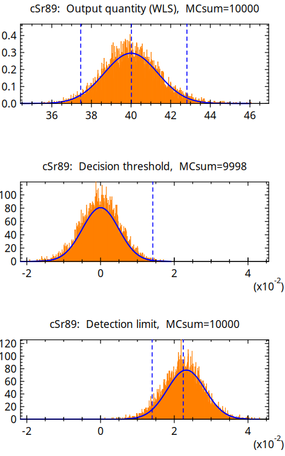

UncertRadio¶
Software zur Berechnung charakteristischer Grenzen nach ISO 11929 für Aktivitätsmessungen¶
Die Software UncertRadio ermöglicht die automatisierte Berechnung der charakteristischen Grenzen einer Aktivitätsbestimmung entsprechend DIN ISO 11929. Im Detail werden die Aktivitätskonzentration bzw. die spezifische Aktivität mit der dazugehörigen kombinierten Standardmessunsicherheit, ihrem Unsicherheiten-Budget und den Werten der Erkennungsgrenze und der Nachweisgrenze ermittelt. Die Unsicherheiten der einzelnen Ergebnisgrößen werden nach ISO GUM mithilfe einer numerisch durchgeführten Fortpflanzung der Unsicherheiten der Eingangsgrößen berechnet.
UncertRadio lässt sich für vielfältige Anwendungen der Alpha-, Beta- und Gammamessung, aber auch der Dosimetrie einsetzen. Die Software kann die charakteristischen Grenzen simultan für bis zu drei Radionuklide zu ermitteln, deren Ergebniswerte, z.B. Aktivitätsmesswerte, durch das Messverfahren bedingt voneinander abhängig sind. Es ist auch für die Auswertung bei modernen Verfahren der Flüssigkeitsszintillationsmessung von z.B. Strontium-Isotopen verwendbar.

Abbildung 1: Beispiel der mit der Monte-Carlo-Simulation mittels gewichteter linearer Ausgleichungsrechnung (WLS) nach [ISO 11929-2:2025](https://www.iso.org/standard/90840.html) erzielten Ergebnisse. Die drei dargestellten Verteilungen beziehen sich, von oben nach unten, auf die Ergebnisgröße, die Erkennungsgrenze sowie die Nachweisgrenze. Die in Blau gezeigten Kurven stellen die analytisch berechneten Gauß-Funktionen [ISO 11929-1:2025](https://www.iso.org/standard/90839.html) dar. Die gestrichelten senkrechten Linien zeigen die unteren und oberen Grenzen des Abdeckungsintervalls, wobei der Mittelwert zwischen ihnen angezeigt wird (obere Grafik); die Erkennungsgrenze (mittlere Grafik); sowie sowohl die Erkennungs- als auch die Nachweisgrenze (untere Grafik).
Die Software unterscheidet zwei mögliche analytische Ansätze, die sich in den Gleichungen zur Auswertung unterscheiden:
Verfahren ohne lineare Entfaltung: die Grundgleichung ist linear in nur einer (verfahrensbezogenen) Nettozählrate (Kanisch, 2016a),
Verfahren mit linearer Entfaltung: die Gleichungen verwenden zusätzlich ein lineares Least-squares-Verfahren für z. B. Abkling- oder Aufbaukurven mehrerer Zählraten (Kanisch, 2016b).
Alternativ kann die Auswertung für beide Varianten auch mithilfe der Monte Carlo-Simulation erfolgen. Dies entspricht einer Unsicherheits-Fortpflanzung ganzer Verteilungen nach GUM Supplements 1 und 2 und ist dann im Vorteil, wenn die Verteilung der Ergebnisgröße deutlich von der einer Normalverteilung abweicht.
Das bedeutet allerdings auch, dass der Nutzer die erforderlichen Gleichungen zur Auswertung formulieren können muss. Ein besonderer Vorteil ist jedoch, dass keine partiellen Ableitungen einzugeben sind. Zum besseren Verständnis der Datenhandhabung innerhalb der Software und der hinterlegten Gleichungen und Funktionen ist eine umfangreiche Sammlung von Anwendungsbeispielen als Projektdateien beigefügt.
Viele der Anwendungsbeispiele stammen aus der Arbeitsgruppe „AK-SIGMA“ des „Fachverbandes für Strahlenschutz“, den Messanleitungen der Leitstellen und aus der Literatur. Diese Beispiele haben, ebenso wie die im Beiblatt 1 zur DIN ISO 11929 (2014) und die in der neueren ISO 11929-4 genannten Beispiele, wesentlich zur Validierung von UncertRadio beigetragen.
Die UncertRadio HTML Dokumentation ist in jeder UncertRadio Installation enthalten. Auf sie kann direkt im Programm über diverse Hilfe-Buttons zugegriffen werden. Desweiteren ist sie auch auf [GitHub Pages](https://openbfs.github.io/UncertRadio/de) verfügbar.
An dieser Stelle wird den Anwendern, vor allem aus den in der Überwachung der Umweltradioaktivität nach AVV-IMIS tätigen Kreisen der Leitstellen und Messstellen, gedankt. Durch Rückmeldungen und neue Anforderungen ist wesentlich zur Weiterentwicklung von UncertRadio und seiner praktischen Anwendbarkeit beigetragen worden.
The actual version is 2.7.0.
Seit der Version 2.5.1 steht der Quellcode online zur Einsicht zur Verfügung und kann aus den Quellen erstellt werden. Eine entsprechende Anleitung findet sich weiter unten. Für Windows werden weiterhin vorkompilierte Pakete bereitgestellt. Diese bestehen aus einem gepackten Archiv mit allen benötigten Datein. Dieses muss zur Nutzung nur entpackt werden. Im Anschluss kann das Programm mit der „UncertRatio.exe“ Datei im Unterverzeichnis „bin/“ gestartet werden.
Die Version 2.4.32 ist die letzte Version, die mit einem Windows-Installationsprogram bereitgestellt wurde.
Von der Version 2.1.4 (2017) bis 2.4.32 bestand der Download aus einer einzelnen executable Datei, welche alle erforderlichen Komponenten der Software enthält (Hilfedateien, kurze Installationsanleitung, Sammlung validierter Beispielprojekte). Zusätzlich wurde eine kurze Anleitung zur Verwendung der Software zum Download bereitgestellt. Die private oder kommerzielle Nutzung der Software ist kostenlos.
Seit der Version 1.08 (2013) kann UncertRadio als Schnittstelle zwischen der Software zur Datenerfassung und der Übertragung charakteristischer Werte in ein modernes Laborinformationssystem verwendet werden. Dabei wird das CSV-Format für den Datenimport und -export genutzt.
Der Programmautor ist Günter Kanisch. Kontaktperson für Fragen und Vorschläge ist Dr. Marc-Oliver Aust vom „Bundeskoordinationsamt für Fisch und Fischereiprodukte, Krebstiere, Mollusken und marine Algen“ des Thünen-Instituts für Fischökologie.
WICHTIGER HINWEIS:
UncertRadio ist Freie Software und kann unter den Bedingungen der GNU General Public License, wie von der Free Software Foundation, Version 3 der Lizenz oder jeder späteren veröffentlichten Version, weiterverbreitet und/oder modifiziert werden.
UncertRadio wird in der Hoffnung, dass es nützlich sein wird, aber OHNE JEDE GEWÄHRLEISTUNG, bereitgestellt; sogar ohne die implizite Gewährleistung der MARKTFÄHIGKEIT oder EIGNUNG FÜR EINEN BESTIMMTEN ZWECK. Siehe die GNU General Public License für weitere Details.
Eine Kopie der GNU General Public License sollte zusammen mit diesem Programm erhalten worden sein. Falls nicht, siehe <https://www.gnu.org/licenses/>.
Das Programm wurde vom Autor nach derzeitigem Stand von Wissenschaft, Normung und Technik entwickelt und bezüglich der Richtigkeit der mathematischen Behandlung der eingegebenen Modell-Gleichungen validiert. Trotzdem wird vom Autor, vom TI und vom BMUV keine Gewährleistung für die Richtigkeit der damit vom Anwender erzielten Ergebnisse gegeben und keine Haftung für daraus resultierende Ansprüche Dritter übernommen.
Wie man zitiert¶
Bei Verwendung von UncertRadio sollten die folgenden Publikationen zitiert werden:
KANISCH, G.; OBER, F.; Aust, M.O.: **UncertRadio**: Software for determining characteristic limits in accordance to DIN EN ISO 11929 for radioactivity measurements
Journal of Open Source Software (JOSS), see above
KANISCH, G.: Generalized evaluation of environmental radioactivity measurements with UncertRadio. Part I: Methods without linear unfolding.
Appl. Radiat. Isot. 110, 2016, 28–41
http://dx.doi.org/10.1016/j.apradiso.2015.12.003
KANISCH, G.: Generalized evaluation of environmental radioactivity measurements with UncertRadio. Part II: Methods with linear unfolding.
Appl. Radiat. Isot. 110, 2016, 74–86
http://dx.doi.org/10.1016/j.apradiso.2015.12.046
UncertRadio aus den Quellen erstellen¶
Voraussetzungen für Windows¶
MSYS2 unter https://www.msys2.org/ herunterladen und installieren
MSYS2 UCRT64-Umgebung starten und das System aktualisieren
pacman -Syuu
MSYS2 UCRT64-Terminal bei Bedarf neu starten
Erforderliche Werkzeuge und Programme installieren
pacman -S git make mingw-w64-ucrt-x86_64-cmake mingw-w64-ucrt-x86_64-toolchain mingw-w64-ucrt-x86_64-gcc-fortran mingw-w64-ucrt-x86_64-gtk3 mingw-w64-ucrt-x86_64-plplot mingw-w64-ucrt-x86_64-wxwidgets3.2-msw mingw-w64-ucrt-x86_64-lapack mingw-w64-ucrt-x86_64-python-sphinx mingw-w64-ucrt-x86_64-python-myst-parser
Wichtiger Hinweis:
Wir sind auf die UCRT64-Umgebung umgestiegen, wie von MSYS2 [vorgeschlagen](https://www.msys2.org/docs/environments/). Das Kompilieren von UncertRadio mit der MINGW64-Umgebung sollte funktionieren, wenn der Schalter -G „MinGW Makefiles“ verwendet wird. Dennoch müssen Sie die entsprechenden Programme mit pacman -S … installieren.
Voraussetzungen für Linux¶
Die folgenden Werkzeuge einschließlich der Entwicklungsbibliotheken müssen installiert sein:
git
cmake
gcc-fortran (und entsprechende gcc-Toolchain)
lapack
gtk3
plplot ([siehe](https://plplot.sourceforge.net/documentation.php)), stellen Sie sicher, dass die Fortran-Bindungen enthalten sind und der Cairo-Treiber installiert ist
Zum Erstellen der Dokumentation werden die folgenden zusätzlichen Werkzeuge benötigt:
python3
python-sphinx >= 8.0
myst-parser
Die meisten dieser Werkzeuge sind über den Paketmanager üblicher Linux-Distributionen verfügbar.
Wir konnten UncertRadio erfolgreich mit den folgenden Distributionen kompilieren:
Arch Linux
pacman -Syu pacman -S base-devel git cmake gcc-fortran lapack gtk3 python-sphinx python-myst-parser
Hinweis: Arch Linux stellt plplot nicht in seinen Repositorys bereit. Daher muss es aus den [Quellen](https://plplot.sourceforge.net/documentation.php) kompiliert werden. Alternativ kann das [AUR-Paket](https://aur.archlinux.org/packages/plplot) verwendet werden. Bitte lesen und verstehen Sie die offiziellen Informationen über die möglichen Gefahren der Nutzung von Software aus dem [AUR](https://wiki.archlinux.org/title/Arch_User_Repository):
git clone https://aur.archlinux.org/plplot.git cd plplot makepkg -si
Debian 13 (trixie) / Ubuntu 24.04
Die folgenden Programme müssen einfach installiert werden:
apt-get update && apt-get upgrade apt-get install build-essential gfortran git libgtk-3-dev libplplot-dev plplot-driver-cairo liblapack-dev python3-sphinx python3-myst-parser
Debian 12 (bookworm)
apt-get update && apt-get upgrade apt-get install build-essential gfortran git libgtk-3-dev libplplot-dev plplot-driver-cairo liblapack-dev
Hinweis: Um die Dokumentation unter Debian 12 zu erstellen, müssen Sie python-sphinx über pip installieren, da die Systemversion zu alt ist. Es wird empfohlen, eine virtuelle Umgebung zu verwenden:
# Install pip and python venv apt-get install python3-pip python3.11-venv # Create and activate the virtual environment python3 -m venv venv source venv/bin/activate # Install the required packages pip install -r docs/requirements.txt # Optional build the documentation directly cd docs python3 make_docs.py
UncertRadio tatsächlich erstellen¶
Repository klonen:
git clone https://github.com/OpenBfS/UncertRadio.git
Nun sollte es möglich sein, UncertRadio zu erstellen.
cd UncertRadio
cmake -B build -DCMAKE_BUILD_TYPE=Release
cmake --build build -j4
Der Schalter -DCMAKE_BUILD_TYPE kann weggelassen werden, um UR im debug-Modus zu kompilieren. Bei Verwendung der MSYS2 MINGW64-Umgebung müssen Sie den Generator mit -G „MinGW Makefiles“ ändern, aufgrund eines gtk3-fortran [Problems](https://github.com/vmagnin/gtk-fortran/issues/292):
cmake -B build -DCMAKE_BUILD_TYPE=Release -G "MinGW Makefiles"
Optimierungsoptionen¶
Standardmäßig wird UncertRadio mit -O2-Optimierung kompiliert, um die numerische Stabilität über verschiedene Prozessorarchitekturen hinweg zu sichern. Besitzen Sie einen modernen Prozessor und möchten aggressive Optimierungen (-O3 -ffast-math) für potenziell bessere Leistung aktivieren, können Sie Folgendes verwenden:
cmake -B build -DCMAKE_BUILD_TYPE=Release -DENABLE_OPTIMIZATION=ON
Hinweis: Aggressive Optimierungen können bei älteren Prozessoren zu Problemen mit der numerischen Genauigkeit führen. Bei unerwarteten Abweichungen bei den Selbsttests (siehe unten) sollte ohne dieses Flag kompiliert werden.
UncertRadio installieren (hauptsächlich für Windows gedacht)¶
Das Installationsverzeichnis kann mit der –prefix-Option angegeben werden:
cmake --install build --prefix=install
Ein Archiv zum Verteilen von UncertRadio erstellen:
tar -czvf UncertRadio.tar.gz install
Aktualisieren¶
Um die neueste Version zu erhalten, aktualisieren Sie einfach den main-Branch
git checkout main
git pull
Nun das Build- und Installationsverfahren neu starten (siehe oben).
Dokumentation erstellen¶
Die UncertRadio HTML-Dokumentation ist online auf [GitHub Pages](https://openbfs.github.io/UncertRadio/) verfügbar. Sie kann jedoch auf zwei Arten aus den Quelldateien erstellt werden. Der einfachste Weg ist, die CMake-Option BUILD_DOCS=T (Standard) einzuschließen und die Dokumentation zusammen mit dem Code zu erstellen.
cmake -B build -DBUILD_DOCS=T -DCMAKE_BUILD_TYPE=Release
Alternativ können Sie sie eigenständig erstellen, indem Sie die Datei make_docs.py im Ordner docs ausführen:
cd docs
python make_docs.py
Vorkompilierte Binärdateien¶
Wir stellen automatisch vorkompilierte Binärdateien zur Verfügung – Nachtbuilds und versionsgetaggte Releases – über GitHub Actions (angehängt an jedes GitHub Release):
Windows – verpackt in einem tar.gz-Archiv.
Linux – ein AppImage (UncertRadio_*.AppImage). Es wurde unter Debian 12 erstellt und sollte auf jeder modernen Linux-Distribution laufen.
Beide Binärdateien sind an das entsprechende GitHub Release ([Nachtbuild](https://github.com/OpenBfS/UncertRadio/releases/tag/Nightly_develop) oder versionsgetaggt) angehängt und können direkt von der [Releases Seite](https://github.com/OpenBfS/UncertRadio/releases) heruntergeladen werden. Es werden keine weiteren Build-Schritte benötigt, um das Programm zu starten. Bitte melden Sie Probleme oder Vorschläge über die GitHub [Issues](https://github.com/OpenBfS/UncertRadio/issues) Seite oder durch ein Pull Request.
UncertRadio starten¶
Nach dem Installationsschritt (oder dem Entpacken des Archivs) kann UncertRadio durch Ausführen der Binärdatei im bin-Unterordner des Installations-/Prefix-Verzeichnisses gestartet werden:
./bin/UncertRadio
Das Linux AppImage muss ausführbar gemacht und direkt gestartet werden:
chmod +x UncertRadio_*.AppImage
./UncertRadio_*.AppImage
Hinweis: Das AppImage erfordert eine kompatible FUSE-Implementierung. Installieren Sie diese mit dem Paketmanager Ihrer Distribution, z. B. apt-get install libfuse2 (Debian/Ubuntu), pacman -S fuse2 (Arch-basiert) oder dnf install fuse (Fedora).```
Eingebaute Tests ausführen¶
Im examples-Verzeichnis sind etwa 70 Beispiele auf Deutsch und Englisch enthalten. Um zu prüfen, ob UncertRadio korrekt läuft, können Sie die eingebauten Tests starten, indem Sie „Optionen/QC-Batchtest“ im Hauptmenü auswählen. Standardmäßig werden alle enthaltenen Projekte (in der enthaltenen BatListRef_v06.txt definiert) geöffnet und ihre Ergebnisse verglichen. Standardmäßig (und beim ersten Start dieses Dialags) ist die Datei bereits ausgewählt. Die Datei für die Ausgabedatei kann leer gelassen werden. UncertRadio erstellt automatisch eine Ausgabedatei. Etwaige Abweichungen werden gemeldet.
Zusätzlich können alle oben genannten Projekttests sowie einige weitere integrierte Tests über die Kommandozeile ausgeführt werden.
./bin/UncertRadio run_tests
Hinweis zu Selbsttests und Optimierung: Wenn Selbsttests unerwartete Abweichungen melden, kann dies mit prozessorspezifischen Problemen der numerischen Präzision bei aggressiven Compiler-Optimierungen zusammenhängen. Versuchen Sie, erneut zu kompilieren, ohne den -DENABLE_OPTIMIZATION=ON-Schalter (der -O3 -ffast-math aktiviert) und verwenden Sie stattdessen den Standard-“-O2-Optimierungsgrad. Tritt ein Fehler auf, kontaktieren Sie uns bitte über die GitHub-[Issues](https://github.com/OpenBfS/UncertRadio/issues) Seite.
Um ein besseres Verständnis der Projektstruktur zu erlangen, können alle Projekte einzeln über den Dialog „Projekt öffnen“ geöffnet werden, der über das Hauptmenü oder das Symbol „Projekt laden“ zugänglich ist. Für die meisten der Projekte sind die erwarteten Ergebnisse auf der Beschreibungsregisterkarte enthalten.
Noch zu erledigen¶
[x] alle (alten) Lizenzinformationen sorgfältig korrigieren
[x] die Lizenzen der enthaltenen Bibliotheken hinzufügen
[x] eine Lizenz für UR2 hinzufügen
[x] die README-Datei ins Englische übersetzen
[x] Linux-Kompilieranweisungen hinzufügen
[x] Entwurf des JOSS-Papers hinzufügen (siehe paper-Branch)
[x] alle enthaltenen Beispiele überprüfen
[x] automatische Tests erstellen (teilweise erledigt, ./UncertRadio run_tests)
[x] eine Sphinx-Dokumentation erstellen und die (Windows-CHM-) Hilfedateien migrieren
[ ] die Dokumentation übersetzen (teilweise erledigt)
[x] die Dokumentation online veröffentlichen
[x] ein automatisches Build- und Upload-System für Windows-Binärdateien erstellen
[ ] den Funktions-Parser auf eine potenziell schnellere Version aktualisieren
[ ] das Logging-System refaktorisieren (teilweise erledigt)
[x] Linux-Binärdateien bereitstellen (als AppImage)
[x] nicht verwendete und nicht initialisierte Variablen entfernen
[x] die vollständige Übersetzung refaktorisieren und vereinfachen
[ ] GUI und Backend trennen (derzeit nicht möglich)
Bekannte Probleme¶
Das überlassen wir Ihnen ;) -> bitte nutzen Sie die [Issue-Seite](https://github.com/OpenBfS/UncertRadio/issues) oder erstellen Sie ein [Pull Request](https://github.com/OpenBfS/UncertRadio/pulls). Wir sind für jede Hilfe dankbar. Bitte beteiligen Sie sich.